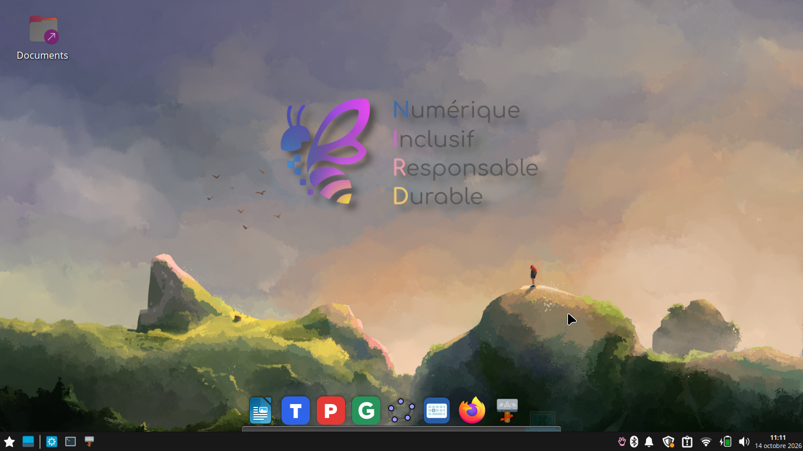
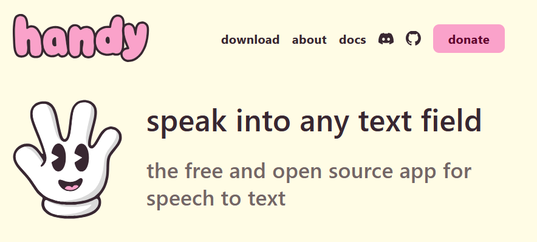

Le coin des enseignants · Ressources
Installer Linux NIRD
Un environnement gratuit pour les élèves du collège et du lycée, et des outils pour rendre le numérique plus accessible.
Linux NIRD
Linux NIRD (Numérique Inclusif, Responsable et Durable) est une distribution gratuite de Linux, conçue pour les élèves du collège et du lycée.
Les outils PAON disponibles en version Linux peuvent être utilisés sur Linux NIRD.

Cet environnement permet de donner une seconde vie à des machines relativement anciennes, notamment avec 2 à 4 Go de RAM et un disque dur classique. Le confort d’utilisation dépend du matériel et des logiciels utilisés.
La page officielle propose une image avec installeur et une version pour clé USB, ainsi que les indications pour préparer la clé.
Dictée vocale Handy
Pour compléter Linux NIRD dans une optique d’accessibilité, Handy est une application libre et open source de dictée vocale.
Pour une installation sur Linux NIRD, privilégiez le fichier .deb parmi les téléchargements Linux.
